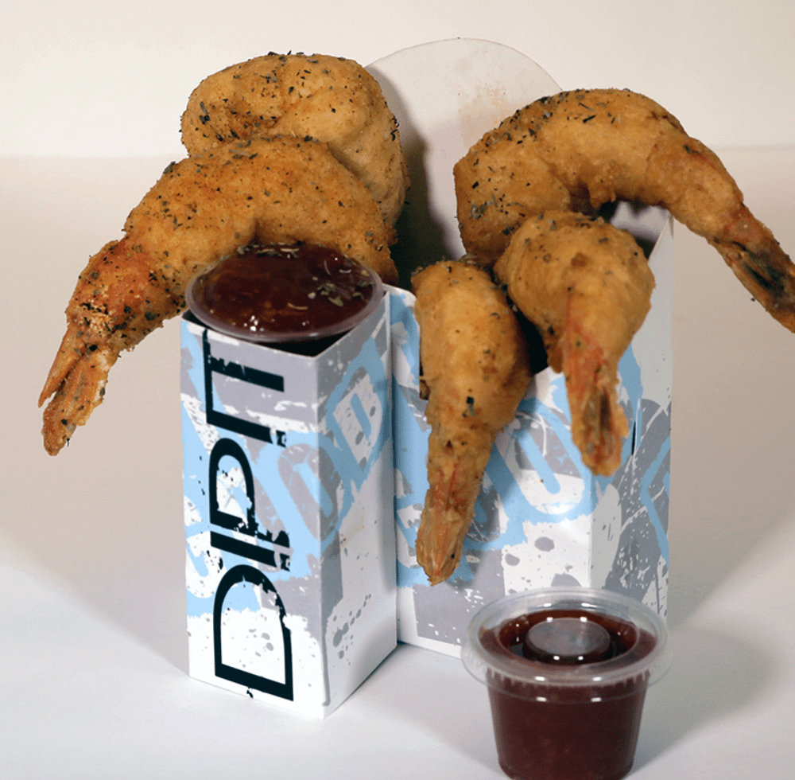
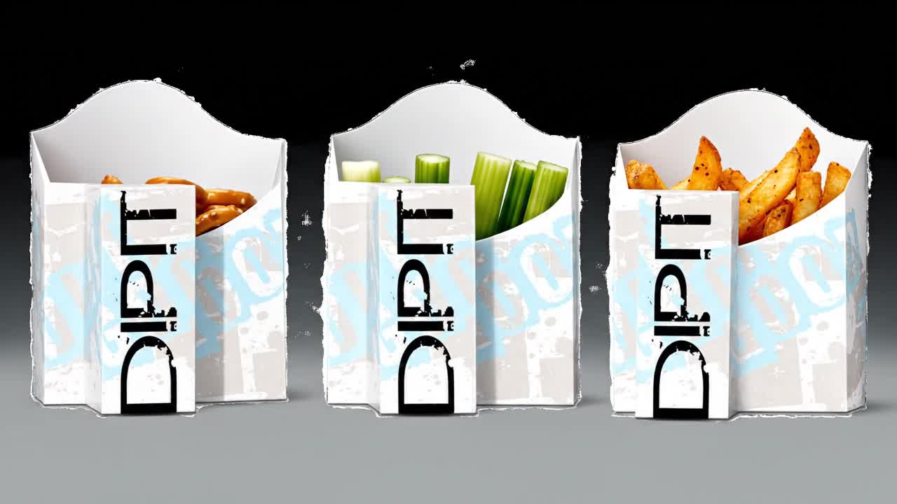

Food meets dip
Keep your chosen snack and its pairing together in one thoughtfully arranged serving.
Meet the little caddy with a big personality. Food, sauce, and your brand—beautifully brought together.
Some things just belong together. Your favorite finger foods and the sauces that make them irresistible.
Dipit combines a food compartment with a dedicated place for your condiment. Take your next serving beyond the ordinary, with ready-made designs for celebrations and opportunities to create a look of your own.
Meet the productAt a party, in a venue, or on the go—give your food presentation a little more thought.
Keep your chosen snack and its pairing together in one thoughtfully arranged serving.
Explore custom artwork for a distinctive event, organization, or brand experience.
Explore party packs for gatherings and wholesale cases for larger serving needs.
Product examples from Dipit’s current collection. Event and project photography will be added as it becomes available.



Project gallery preview · Event photography and completed custom designs will be featured here soon.
Make your food presentation part of the story. Bring your logo, your event, or your idea to the table and talk with us about custom branding.
Talk about my custom DipitThis space is reserved for approved customer testimonials. Have you used Dipit at your event or in your business? We’d love to hear about it.
Share your Dipit experienceExplore ideas for pairing, presentation, events, and your next order.
Think about the places you enjoy a snack: a busy concourse, a backyard gathering, a school celebration, or a movie night with friends. Food is part of the experience, but carrying it should not become the whole experience. A thoughtful serving setup gives guests somewhere to keep their food and somewhere to reach for their favorite dip. Dipit brings these two everyday needs into one compact format. Choose a finger food that fits your occasion, pair it with a complementary sauce, and create an individual serving that feels considered. Start with your menu and the way people will move through the space. That simple planning step helps you choose an approach that works for the moment.
The most memorable snack is often a familiar food with a dip that makes it feel special. Picture crisp vegetables with a creamy dressing, warm fries with your favorite condiment, or a savory appetizer with a bright, tangy sauce. You can build a serving around a classic combination or introduce guests to something unexpected. Consider how the food will be prepared, how it will be served, and whether guests will be sitting or moving around. Always follow your normal food handling procedures and check dietary needs with your guests. For hosts, a little preparation goes a long way: organize your ingredients, plan the portions, and make it clear which sauce accompanies each serving.
An event has a personality before the first guest arrives. It might feel lively and playful, clean and professional, or personal and celebratory. The details people hold in their hands can help carry that personality throughout the space. When planning custom artwork, begin with one clear idea: a logo, an event name, or a distinctive visual motif. Keep the design easy to recognize at a glance and consider how it will look alongside your food presentation. Bring your artwork and event details to the Dipit team to discuss the options. Ask about suitable designs, quantity, timing, and any artwork requirements before making your plans final. A focused conversation helps turn a creative idea into a practical project.
Serving food at a venue involves more than selecting a menu. Think about where guests order, where they collect their food, and where they go next. A game, performance, or campus event often asks people to move through a busy environment while keeping their attention on something else. Individual portions can help you plan that journey with greater care. If you are considering Dipit for your operation, describe your service format and the finger foods you want to serve. Discuss expected volume and the kind of presentation you need. Your team can then evaluate how a caddy would fit into existing procedures. A small product trial is a useful way to inform decisions before a larger purchasing commitment.
Hosting becomes easier when the small details support the people you have invited. Consider who will attend, which foods they enjoy, and how long the gathering will last. A snack table for a family celebration may need a different approach from refreshments at a professional event. Choose a presentation that feels appropriate and keep your menu understandable. If you offer several dips, label them clearly and account for allergies according to your usual procedures. Place serving supplies where guests can find them without interrupting the flow of the gathering. Dipit party packs offer a place to begin when you want to explore individual food and condiment servings. Review the current store listing for pack details before ordering.
Useful branded items can become part of an experience rather than an interruption to it. A food caddy offers a surface that guests naturally notice while they enjoy their snack. For a campaign or event, consider what you want someone to remember: your organization name, a visual identity, or the occasion itself. Avoid trying to communicate every message at once. Clear artwork and a considered food pairing can work together to make the presentation recognizable. If your project involves custom printing, speak with the team about what is possible for your quantity and schedule. Bring an outline of the campaign, the audience, and the setting so the conversation starts with a concrete goal.
You do not need to begin with a large project to understand the product. For a personal gathering, explore the available party packs and choose a design that matches the occasion. For an operation serving larger groups, review the wholesale listings and the case quantities. For a unique visual direction, request a conversation about custom branding. Before placing an order, check the listing for the exact product, price, pack size, and condiment cup compatibility. Confirm current availability, shipping details, and any terms in the existing Dipit store. If you are unsure which option fits your plans, describe the event, expected attendance, and service style in your inquiry so the team can help you evaluate the next step.
The best inquiries make it easy to understand the project. Share the setting where you plan to use Dipit, the kind of food you want to serve, and an approximate quantity. If you have a target date, include it in your message without assuming a particular production timeline. For custom work, mention whether you already have a logo or artwork available. For wholesale, explain the scale and frequency of your needs. You can also describe any questions your team needs answered before deciding. These details create a useful starting point for discussing fit, pricing, and practical requirements. Use the inquiry form to record your interest, or contact a team member directly by email for a personal conversation.
Choose a party pack, explore wholesale, or start a conversation about custom branding.